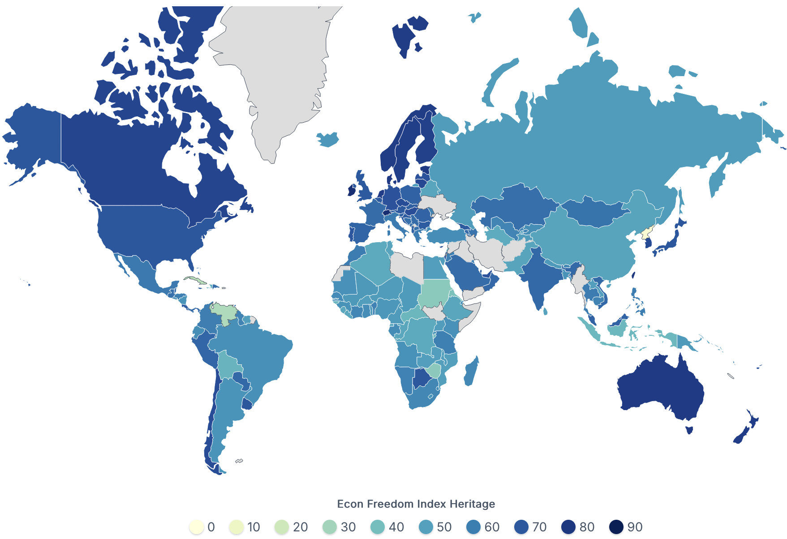
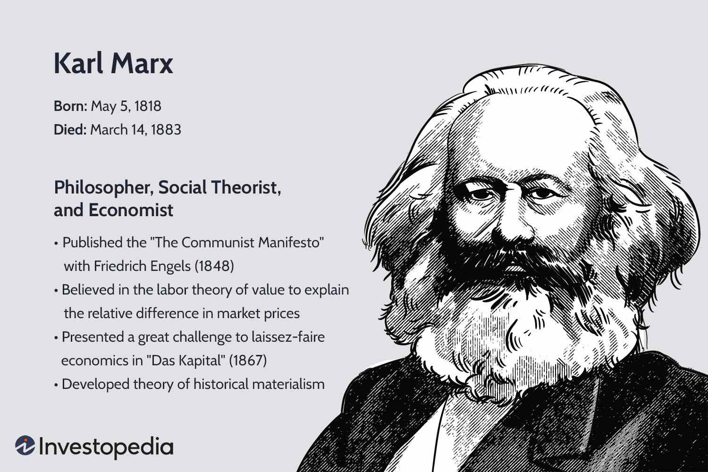

3 Future Design: From the Perspective of Economics
3.1 What is Capitalism?
Capitalism is an economic system that allows for and encourages the private ownership of businesses that operate to generate profit. Also known as the market system, capitalism is characterized by private land ownership rights, competitive markets, the stable rule of law, freely operating capital markets, low corruption, and a price discovery process.
3.1.1 How many countries are currently experiencing capitalism?
There is no single official number, because capitalism is not a binary label and most countries today operate mixed economic systems rather than “pure” capitalism.
Pure capitalism: essentially none
Capitalist or mixed-capitalist economies: ~170–180 countries
Non-capitalist command economies: very few (≈2–5)

Source: https://worldpopulationreview.com/country-rankings/capitalist-countries
3.2 Open question: Do you think capitalism considers the needs and interests of future generations?
3.2.0.1 What is the existence of future generations in the current political and economic system?
- Is there any existing system that listen to future generations and make their voices heard?

3.2.1 Economy: Capitalism
- Financial market, Commodity market, and Labor market

3.3 Benefits of Capitalism
The main benefit of capital is that it provides a strong incentive and motivation to produce, grow, innovate, improve, and move forward in a positive way. Those who believe in a free market system argue that free markets and competition result in superior businesses and, thus, better products and services.
Some of the the potential advantages of capitalism are listed below:
3.3.1 It encourages efficient production
Mixed-market capitalism rewards the most efficient producers since they can sell more goods and earn more money than inefficient producers. Companies strive to be reliable suppliers for consumers, leading to large-scale availability of products to meet growing or high demand.
3.3.2 It facilitates rapid economic growth
Limited government intervention encourages producers and consumers to accumulate wealth by offering their services to as many parties as they can. Before the widespread adoption of capitalism in the Industrial Revolution of the eighteenth and nineteenth centuries, resources were often acquired through conquest. Under capitalism, resources are required through free trade between any two parties allowing the producers of any resource to accumulate wealth and satisfying the needs of the consumer.
3.3.3 It rewards innovation
Capitalism provides incentives for economic growth. Exciting new products may satisfy consumer demand better than existing products, and competitors will recognize that they can increase their profit by producing an innovative product. Higher profits mean a higher accumulation of wealth, which can further incentivize people to invest in bigger and better technologies and systems.
3.3.5 Does Absolute Capitalism Exist?
In theory, yes. In practice, no country in the world has ever achieved a 100% capitalist, “laissez-faire,” or free-market economy. All capitalist economies are mixed to one degree or another. The following are some high-profile examples.
3.3.6 Is America Capitalist?
Yes, but not completely. The United States is actually referred to as a mixed market economy, meaning that it blends characteristics of both capitalism and socialism.
In the United States, the means of production (such as manufacturers or importers) are privately owned and operated for profit. This is a clearly capitalist approach. However, because the economy has regulations, taxation, and some subsidization, the United States is not a purely capitalist society. The government has at least partial control over education, roads, health care, and postal deliveries. It also provides subsidies to sectors including oil companies, financial companies, and agricultural producers. Additionally, private businesses must register with government agencies, and certain types of companies need government-approved licenses.
3.3.7 Is Japan Capitalist?
Yes, but in an altered form. Japan is a capitalist country in the form of “collective capitalism”. In Japan’s collective capitalist system, workers are usually compensated with job security, pensions, and social protection by their employers in return for loyalty and hard work. Collective capitalism focuses on long-term relationships, such as companies owning shares in other companies, resulting in cooperation between companies because they are invested in one other’s prosperity.
3.4 Alternative Economic Systems
While capitalism isn’t perfect, there are not many other shining examples of other economic systems. The most common alternative systems are:
3.4.2 Communism
The communist economic system is one step further than socialism where the government owns the entire means of production (i.e., all businesses are state-owned) and the government provides all citizens with a fixed standard of living. Communism is the opposite of capitalism in that all businesses are state-owned, the economy is centrally planned, and the allocation of capital is not a free market.
3.4.3 Fascism
Fascism is a nationalistic type of economic system where the government forces business to place the interest of the nation above their company’s. In fascism, the ruling party and central planners of the country dictate what business owners need to do. The primary focus of this system is on nation-building, and it may be coupled with strong military force.
3.5 Marx’s View of Capitalism: A Quick Background
Karl Marx viewed capitalism as a historical stage in human development marked by private ownership of the means of production and wage labor. He believed it was driven by the pursuit of profit and the accumulation of capital, which shaped every aspect of economic and social life.

For Marx, the central flaw of capitalism was its foundation on exploitation and inequality, leading to recurring crises and social conflict. He argued that capitalism’s internal contradictions would eventually make it unsustainable.
3.6 Core Problems of Capitalism According to Marx
3.6.1 Exploitation of Labor
Marx argued that capitalism exploits workers by extracting surplus value from their labor. Capitalists pay workers less than the value they produce, keeping the difference as profit. This surplus value is the basis of capital accumulation. Workers sell their labor power as a commodity, but they have no control over what they produce or how profits are distributed. As profits rise, wages stagnate or fall, deepening inequality. This exploitation is systemic—not a result of individual greed but a built-in feature of capitalist production. For Marx, this unequal exchange laid the foundation for class antagonism and the eventual downfall of the capitalist system.
3.6.2 Concentration of Wealth
Capitalism, according to Marx, inevitably concentrates wealth and capital in the hands of a few. As competition forces smaller businesses out, capital consolidates into monopolies or oligopolies. Wealth accumulates not because of merit but through ownership of capital and control over production. The rich get richer through passive income, while workers remain dependent on wages. This concentration leads to the political domination of the capitalist class, as economic power translates into influence over laws, media, and institutions. Marx saw this as a threat to democracy and social stability, predicting that wealth inequality would intensify class struggle and drive revolutionary change.
3.6.3 Crisis of Overproduction
Marx believed capitalism suffers from recurring crises caused by overproduction and underconsumption. Capitalist firms must constantly expand production to compete and increase profits. However, workers—who are also consumers—can’t afford to buy all the goods produced because they’re paid too little. This leads to excess inventory, factory shutdowns, and mass layoffs. Instead of meeting human needs, production is driven by profit motives, creating waste and inefficiency. These crises are not anomalies but symptoms of capitalism’s internal contradictions. Marx argued that each crisis would be worse than the last, eventually pushing the system to its breaking point.
3.6.4 Commodification
Capitalism turns everything—including labor, nature, and even social relationships—into commodities for sale. Marx saw this as a profound distortion of human values. In the pursuit of profit, use-value (what something is for) becomes secondary to exchange-value (what it sells for). Education, healthcare, and art are no longer public goods but commercial products. Human needs become market-driven, and non-market activities lose value. This commodification erodes genuine social bonds and replaces them with market transactions. Marx believed that when everything is for sale, human dignity is diminished, and society becomes governed by impersonal market logic.
3.6.5 Class Struggle
Marx claimed that class struggle is the driving force of historical change under capitalism. The interests of capitalists and workers are fundamentally opposed. Capitalists aim to maximize profit, often by suppressing wages and cutting labor costs. Workers, on the other hand, seek better pay and conditions. This conflict cannot be resolved within the system because it stems from its basic structure. Workers have no control over production, and capitalists rely on their labor to generate profit. Marx argued that as class consciousness grows, workers will eventually unite, overthrow the bourgeoisie, and build a classless society.
3.6.6 Imperialism
Marx believed capitalism expands globally to escape internal contradictions and maintain profits. As domestic markets saturate, capital seeks new markets, resources, and cheap labor abroad. This leads to colonization, war, and the exploitation of foreign populations. Imperialism allows the capitalist class to shift crises outward and delay collapse. However, it also spreads capitalist contradictions to new regions, sowing resistance and unrest. Marx saw imperialism not as a choice but a necessity for capitalism’s survival. It deepens global inequality, transferring wealth from the periphery to the core, and makes global revolution more likely.
3.6.7 Environmental Degradation
Capitalism prioritizes profit over ecological sustainability, leading to environmental destruction. Marx observed that capitalist production treats nature as an endless resource and a dumping ground for waste. There’s no incentive to preserve ecosystems or reduce pollution when short-term profit is at stake. This results in soil depletion, deforestation, and climate instability. Marx described this as a “metabolic rift” between human society and nature—a breakdown of the balance required for long-term survival. He argued that only a system focused on social needs, not profit, could restore harmony with the environment.
3.6.8 Alienation
Under capitalism, workers become alienated from their labor, the products they create, and their own human potential. Marx identified four types of alienation: from the product, the process, fellow workers, and self. In capitalist production, labor becomes mechanical and repetitive, reducing human creativity to monotonous tasks. Workers have no say in what they make or how it’s made, disconnecting them from the fruits of their work. Their relationships with others are transactional, not communal. Most damagingly, labor becomes merely a means to survive rather than a fulfilling activity. Marx saw this alienation as a psychological and social crisis deeply embedded in capitalist society.
3.7 Contemporary Relevance of Marx’s Critique
Marx’s critique of capitalism remains highly relevant in today’s global economy. Income inequality continues to rise, with billionaires controlling more wealth than entire nations. Workers face job insecurity, wage stagnation, and automation threats, echoing Marx’s warnings about exploitation and alienation. Climate change, driven by profit-centered industries, reflects the environmental degradation Marx foresaw. Even financial crises, like the 2008 crash, follow the pattern of overproduction and under-consumption he described.
Global supply chains and corporate imperialism also mirror his insights on expansion and exploitation. Multinational companies extract resources from the Global South while maintaining profits in the Global North. These dynamics reveal that Marx’s analysis wasn’t just historical—it provides a framework to understand capitalism’s enduring problems and systemic contradictions in the modern world.
3.8 Conclusion
Marx’s critique of capitalism offers a powerful lens to examine the system’s foundational problems—exploitation, inequality, alienation, and environmental harm. While the world has changed since his time, many of the contradictions he identified remain unresolved. His analysis challenges us to look beyond surface-level reforms and question the deeper logic of capitalism itself. Whether one agrees with his solutions or not, understanding his critique is essential for anyone serious about economic justice, sustainability, and systemic change. As crises intensify globally, Marx’s ideas continue to provoke debate and inspire movements seeking a more equitable and humane future.
3.9 Punchline:
Our currenct economic systems, including capitalism, do not have the interests of future generations. However, capitalism is considerd as the most acceptable economic system around the world.
3.10 Next class:
Politics: Democracy - Vote, Parliament, and Trial

3.4.1 Socialism
Socialism is the closest alternative to capitalism. It provides a system where both individuals and governments own the means of production, and they may compete. For example, in the oil industry, there may be a combination of state-owned oil producers and privately-owned ones. It gives the government more control over strategic assets and may provide more revenues than just collecting taxes.
The downside of socialism is that the government may not be as efficient an operator, and thus, will not be as profitable as the private competitors. It may also mean the state-owned companies get favorable terms and treatment.